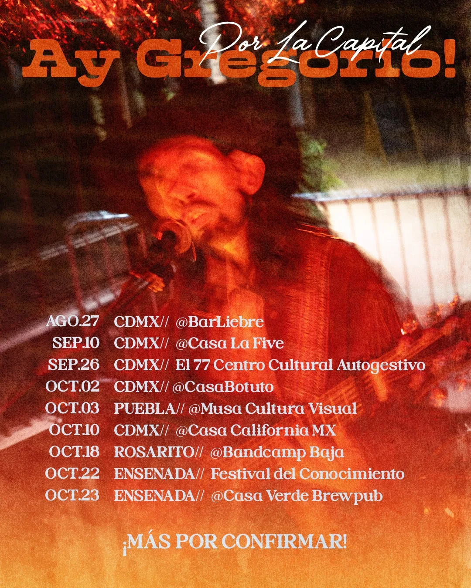
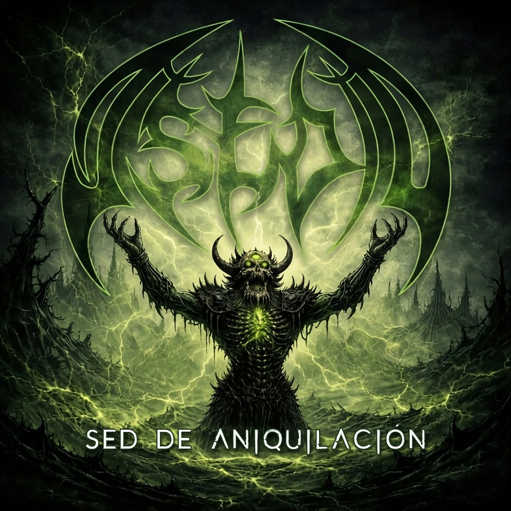
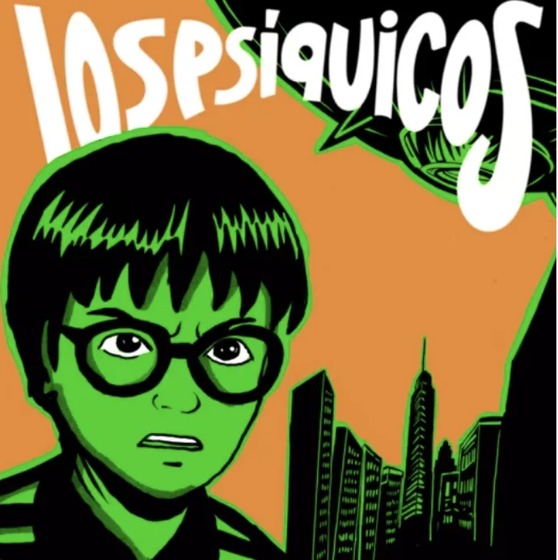

"SOMOS GENTE DE MAR"
AY GREGORIO! CONTRA EL ECOCIDIO

El compositor ensenadense Ay Gregorio! presenta "Somos Gente de Mar", un videoclip que combina música, humor, sátira y denuncia social para abordar las posibles afectaciones ambientales y sociales de los proyectos de construcción de un megapuerto en El Sauzal y Punta Colonet, Ensenada, Baja California.
Inspirado en la estética del programa chileno 31 Minutos, el vídeo presenta el enfrentamiento entre un político-empresario que defiende el megaproyecto y una gaviota rebelde que representa la defensa del mar y los ecosistemas de la región.
La producción también visibiliza a la comunidad que depende del mar y forma parte de la identidad de Ensenada: surfistas, familias, vendedores, trabajadores de mariscos y otros habitantes que podrían verse afectados por el desarrollo industrial de la zona.
A través de esta propuesta audiovisual, Ay Gregorio! busca generar conciencia sobre la importancia de preservar la vocación pesquera, turística y gastronómica de Ensenada y defender sus ecosistemas marinos.

El videoclip fue realizado de manera independiente por PerRAlternativx, productora encargada del guión, grabación y edición, como parte de un proyecto autogestivo que vincula la música con la protesta social.
Durante agosto, septiembre y octubre de 2026, Ay Gregorio! estará de gira en Ciudad de México, donde continuará presentando su propuesta artística y promoviendo "Somos Gente de Mar".
CONCIERTOS 2026
10 Sep — CDMX Casa La Five
26 Sep — CDMX El 77 (Centro Cultural Autogestivo "Flor de Cantos")
2 Oct — CDMX @ Casabotuto
3 Oct — Puebla Musa Cultura Visual
10 Oct — CDMX Casa California
18 Oct — Rosarito @ Bandcamp Baja
22 Oct — Ensenada Festival del Conocimiento
23 Oct — Ensenada Casa Verde Brew Pub
💬 DENUNCIA Y RESISTENCIA
Con humor y sátira, Ay Gregorio! convierte la música en una herramienta de protesta para defender la vocación pesquera, turística y gastronómica de Ensenada ante la amenaza del megapuerto en El Sauzal y Punta Colonet.
OTROS RUIDOS

ARUSAL: Reverberación
Un viaje sonoro que fusiona texturas orgánicas con electrónica.

ASEDIO: Sed de Aniquilación
Metal crudo que no da tregua desde el underground mexicano.

LOS PSÍQUICOS: No Miro Atrás
Rock pop experimental con historieta.